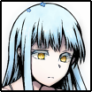

登場人物
 |
|||
| 夜高ミツル | 糸賀大亮 | 乾咲フラン | 忽亡ゆかり |
| アルバイター高校生 | 限界大学生ハンター | 年齢不詳の美麗派 | 仕事人ハンター |
 |
 |
 | |
| 真城朔 | 皆川彩花 | フォゲットミーノット | 紅谷菖太 |
| ミツルのクラスメイト | 大亮の友人 | フランが討伐した吸血鬼 | ミツルのクラスメイト |
プレイヤーキャラクター

PC1 夜高ミツル(よだかみつる)
- レベル
- １
- 種族
- 人間
- 武装
- 料理
- 所属
- 無所属
- 特性値
- 【攻撃力】０ 【打撃力】０
【防御力】１ 【行動力】１ - 特技
- 《話す》《見る》《操作》《耐える》《蹴る》《捕らえる》
- ギャップ
- A・D
- アビリティ
- 【暴力《捕らえる》】【塩を振る】【焼肉】【遮蔽】
- アイテム
- 「料理」「興奮剤」「興奮剤」
幸福「真城朔」《日常》強度１
――数少ない友人。
幸福「背徳：家族の思い出」《自信》強度１
――忘れてしまえたら、なんて。
PC2 糸賀大亮(しがだいすけ)
- レベル
- １
- 種族
- 人間
- 武装
- 杭
- 所属
- クラブ
- 特性値
- 【攻撃力】１ 【打撃力】１
【防御力】０ 【行動力】０ - 特技
- 《考えない》《叫ぶ》《刺す》《測る》《蹴る》《歩く》
- ギャップ
- A・E
- アビリティ
- 【暴力《考えない》】【狩人の誓い】【二度打ち】【腸貫き】
- アイテム
- 「杭」「興奮剤」「興奮剤」
幸福「皆川彩花」《日常》強度１
――入院した病院で出会った少女。
幸福「背徳：Cチーム」《退路》強度１
――前に所属していたクラブ繋がりのチーム。みんな死んだ。もしかしたら自分のせいではないかと思っている。
彼らが生き返れば、このどうしようもない罪悪感が消える気がしている。それは、どんな形ででも。
PC3 乾咲フラン(いぬいさきふらん)
- レベル
- １
- 種族
- 人間
- 武装
- 化粧・格闘
- 所属
- 美麗派
- 特性値
- 【攻撃力】１ 【打撃力】１
【防御力】０ 【行動力】０ - 特技
- 《黙る》《予感》《締める》《落ちる》《跳ぶ》《現れる》
- ギャップ
- B・D
- アビリティ
- 【暴力《現れる》】【跳躍攻撃】【変装】【決めポーズ】
- アイテム
- 「化粧」「興奮剤」「興奮剤」
幸福「フォゲットミーノット」《地位》強度１
――私が倒した。
幸福「背徳：コレクター」《日常》強度１
――美しいモノを全て集めたい。
PC4 忽亡ゆかり(くちなしゆかり)
- レベル
- １
- 種族
- 人間
- 武装
- ナイフ・聖印
- 所属
- 曙光騎士団
- 特性値
- 【攻撃力】１ 【打撃力】１
【防御力】０ 【行動力】０ - 特技
- 《話す》《見る》《刺す》《耐える》《走る》《捕らえる》
- ギャップ
- B・D
- アビリティ
- 【暴力《捕らえる》】【交差攻撃】【捨て身】【人間の血】
- アイテム
- 「ナイフ」「聖印」「興奮剤」
幸福「モンスターの討伐」《日常》強度１
――平穏のため、モンスターは討伐せねばならない。
幸福「背徳：寂寥」《退路》強度１
――寂しい。時折、耐え難いほどの寂しさに襲われる。
ノンプレイヤーキャラクター

真城朔(ましろさく)
ミツルのクラスメイト。高校三年。
怪我やサボりが非常に多い不良生徒。

皆川彩花(みながわあやか)
大亮の友人。高校二年。
長く病を患っており、入退院を繰り返しているが明るい少女。

石原胡桃(いしはらくるみ)
大亮と彩花の友人。高校二年。
彩花の身体を案じている。バレー部所属のWS。